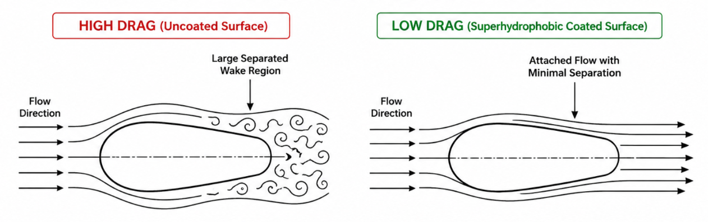

Drag Reduction of Underwater Vehicles using a Superhydrophobic Coating
Development of a mechanically robust epoxy-based superhydrophobic coating designed for underwater applications, hydrophobicity, corrosion protection and potential drag reduction.
Designing a Robust Hydrophobic Surface
This academic project focuses on developing a mechanically robust epoxy-based superhydrophobic coating for underwater applications.
Superhydrophobic surfaces are characterized by very high water contact angles and low sliding angles, resulting from low surface energy and hierarchical micro-nano surface roughness.
The proposed coating combines silicon carbide (SiC) particles, carbon nanotubes (CNTs), epoxy resin and PDMS to improve hydrophobicity, mechanical durability, corrosion resistance and potential underwater drag reduction.
The Challenge with Superhydrophobic Surfaces
Water Repellency
Superhydrophobic surfaces provide strong water repellency through low surface energy and hierarchical roughness.
Mechanical Durability
Micro-nano structures can be fragile and susceptible to mechanical wear and external loading.
Robust Coating
The project incorporates mechanically strong SiC and CNT structures within an epoxy-based coating while retaining hydrophobicity.
Engineering Objectives
Robust Superhydrophobic Coating
Develop a mechanically robust and chemically stable coating for underwater applications.
Hierarchical Surface
Develop micro-nano surface structures using SiC particles and CNTs.
Coating Strength
Improve coating strength and substrate adhesion using epoxy resin.
Hydrophobicity
Enhance hydrophobicity using PDMS and hydrophobic silica.
Performance Evaluation
Investigate corrosion resistance, mechanical durability and underwater drag reduction.
Multi-Component Material System
SiC Particles
Mechanical reinforcement and micro-scale surface structure.
CNTs
Hybrid reinforcement network for improved mechanical robustness.
Epoxy Resin
Structural strength and adhesion to the substrate.
PDMS
Low surface energy and enhanced hydrophobicity.
Hydrophobic Silica
Additional contribution to the hydrophobic surface structure.
Stearic Acid
Surface modification and reduction of surface energy.
From Surface Modification to Final Coating
SiC Modification
Surface modification of SiC particles using KH-550.
Hybrid Network
CNTs are incorporated to form a hybrid reinforcement network.
Composite Preparation
Modified SiC/CNT particles are combined with hydrophobic silica, epoxy and PDMS.
Ultrasonic Dispersion
The mixture is ultrasonically dispersed to obtain a uniform coating solution.
Spray & Cure
The coating is sprayed onto the base layer and thermally cured.
Coating Components
Evaluating Surface Performance
Multiple characterization methods are used to evaluate morphology, chemistry, hydrophobicity, stability and corrosion behaviour.
FT-IR
Chemical structure and functional group analysis.
XPS
Verification of surface chemical modification.
Contact Angle
Evaluation of surface hydrophobicity and water repellency.
Sliding Angle
Evaluation of water droplet mobility across the coated surface.
SEM
Observation of micro-nano surface morphology.
Mechanical Stability
Evaluation of resistance to friction and wear.
Chemical Stability
Evaluation under acidic, basic, UV and saline conditions.
Corrosion Resistance
Electrochemical evaluation of corrosion protection.
Surface & Drag Concept

Physics-Based Hydrodynamic Analysis
The Basset-Boussinesq-Oseen (BBO) equation is used as the primary physics-based model to describe the motion of a sphere falling through water.
The model considers gravitational, buoyancy, drag and added-mass forces.
Drag coefficient and Reynolds number are used to characterize the hydrodynamic behaviour and evaluate the effect of the superhydrophobic coating on fluid resistance.
The model provides a physics-based framework for analysing particle/sphere motion in a fluid and studying hydrodynamic forces.
Comparing Coated vs Uncoated
Uncoated Surface
Reference surface used for comparison of hydrodynamic behaviour.
Superhydrophobic Coating
Coated surface investigated for changes in hydrodynamic resistance and surface interaction.
Drag reduction is evaluated by comparing the hydrodynamic behaviour of an uncoated reference surface with the superhydrophobic coated surface. The drag reduction efficiency is determined from the difference in drag experienced by the two surfaces.
What is Measured?
Design Intent & Potential Benefits
Water Repellency
Improved water repellency through hierarchical micro-nano surface structures.
Durability
Enhanced mechanical durability of the coating.
Corrosion Protection
Improved corrosion protection for underwater surfaces.
Drag Reduction
Reduced solid-liquid interaction through air-layer formation and potential reduction in underwater hydrodynamic drag.
Where Could the Technology Apply?
Engineering & Research Skills
Moving Towards Realistic Conditions
Future work can focus on optimizing coating composition, improving long-term mechanical durability, evaluating performance under different flow conditions and validating drag reduction under realistic underwater operating environments.
This project is ongoing. The performance benefits described on this page represent the engineering objectives and expected behaviour of the proposed coating unless explicitly identified as measured results.
Explore more projects
View the complete collection of academic and personal engineering projects.